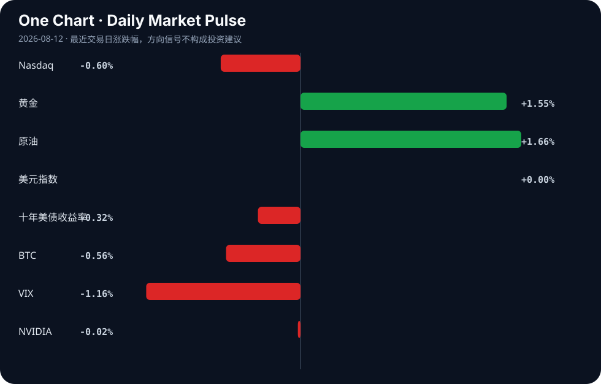

Daily Intelligence
2026-08-12｜Wednesday
Today’s Thesis｜今日一句话
今天最值得关注的不是“AI 还在扩张”，而是 AI 正从通用叙事转向可审计、可落地、可计量的生产函数改造，市场因此开始区分“会用 AI”与“能把 AI 变成利润”的主体。[A3][A4][A20][B9]
① Executive Summary｜30 秒
- AI：多个信号都指向同一件事——AI 的讨论重心正在从“模型能力”转向“部署机制、可解释性与行业落地”。例如，“小模型+智能体”被用于制造业探路最后一公里，[A3] 还有关于模型切换暴露推理痕迹、以及决策日志类工具的出现，说明“可审计”正在变成新的产品层。[A2][A20]
- 商业：产业侧开始把 AI 当作降本增效工具而不是展示品；制造、交通、农业、医疗等场景均出现“工具化”信号，但这些信号更多证明的是试点扩散，而不是已完成规模化兑现。[A3][A10][A11][A22]
- 宏观：风险资产偏好出现分化：纳指与 BTC 回落，黄金与原油上行，10 年美债收益率下行，VIX 也同步回落，说明市场并非单线“risk-off”，而更像是在交易“增长预期降温 + 通胀/避险对冲抬升”的组合。[Signal Dashboard]
② AI Daily
1) What Happened
“AI Adoption Is a Myth”与“人类 vs AI vs 人机协作”的讨论同时出现，[A1][A9] 说明市场对“AI 是否真的被普遍采纳、以及采纳后是否真的提高产出”仍在重新评估。与此同时，关于“模型切换可暴露推理痕迹”的报道，[A2] 以及 Anthropic 对 Claude AI 生成内容标记方式的争议，[A7] 都把注意力拉向了一个更底层的问题：AI 系统的行为是否能被外部验证、解释和归因。
2) Why It Matters
如果过去的竞争重点是“谁的模型更强”，今天更像是“谁能证明 AI 在真实流程里产生了增量”。 小模型+智能体跑到制造业一线，[A3] 说明企业买单的前提正在变化：不是单次演示，而是持续嵌入流程、能被审计、能与既有系统耦合。A2 → A7 → A20 形成了一个清晰链条：推理痕迹可被观察 → 内容/决策需要标记或记录 → 代理型系统必须留下操作日志，否则难以进入高责任场景。
3) Second-order Effect
第二层影响可能不是“AI 用得更多”，而是“AI 产品形态变窄”：
- 面向消费者的泛助手，可能继续承受“用得热闹、留存一般”的压力；
- 面向企业的工具，会更强调工作流集成、日志、权限、风控与验证；
- 能把“可解释性”和“可审计性”做成产品能力的公司，可能获得更高的行业准入率。
这意味着未来的竞争，不只在模型参数，也在流程控制、责任链设计和数据留痕能力。[A2][A7][A20]
2) What Happened
制造业场景中，“小模型+智能体”被描述为跑出大效益、并被视作制造业 AI 探路“最后一公里”的路径。[A3] 同时，围绕“Hacktoberfest 2026: Building with AI; not PRs”与“AI vibe coded game projects suck”的讨论，[A12][A5] 暗示开发者社区内部也在重新区分“能快速生成”与“能稳定交付”。
2) Why It Matters
这反映出 AI 的价值正在从“生成内容”迁移到“生成结果”。 纯文本因果链：试点工具化 → 责任边界更清晰 → 更容易进入制造/企业流程。[A3][A12] 在制造业里，AI 若不能和设备、工艺、质检、调度结合，就只能停留在展示层；而小模型与智能体之所以重要，是因为它们更可能在成本、延迟和部署复杂度上满足现场约束。[A3]
2) Second-order Effect
如果这一趋势延续，AI 的需求结构可能进一步分层：
- 前沿大模型仍决定能力上限；
- 但真正产生采购与部署收入的，可能是更轻量、更专用、更可控的中间层；
- “最后一公里”会把竞争从训练竞赛，推向集成、运维与现场适配。
这类变化通常对“概念强、交付弱”的产品不利，对具备行业工程化能力的团队更有利。[A3][A12]
③ Business Daily
科技
科技板块今天最值得看的是 AI 需求如何向硬件和供应链传导。TSMC 销售同比大增 45%，但投资者反应平淡，[A4] 这说明市场已经开始把“AI 需求强”视为低阶信息，转而追问这种需求能否持续转化为利润、资本开支和估值再定价。Jabil 被上调评级，理由同时指向 AI 需求与医疗增长，[B9] 进一步说明 AI 的产业外溢已经不局限于单一芯片链条。
制造
制造业相关信号最集中。凤凰网报道的小模型+智能体案例，[A3] 与“AI is reaching America’s blue collar industries”这一方向性判断，[B22] 都在指向同一机制：企业并不一定先从最复杂的通用智能开始，而是先从局部流程、重复任务、可量化环节切入。 这意味着制造业 AI 的价值判断，可能从“是否聪明”转为“是否省时、省错、省人”。如果试点能够被复制，接下来看点会从单点案例转向行业工作流标准化。
医疗
医疗侧出现了两类不同层级的信号：一类是 USC 关于用量子计算重新思考癌症检测，[A11] 另一类是“Expert-Level Medical AI for Real-Time Video Consultations”的研究。[A17] 它们共同说明医疗 AI 仍在沿着“高价值、强约束、强合规”的路径前进。 但这里需要区分事实与推断：事实是研究和探索仍在推进；推断是医疗行业最终会更偏好“能嵌入诊疗流程、而非仅能生成文本”的 AI。
能源
原油上涨、黄金上涨、十年美债收益率下行，[Signal Dashboard] 共同提示市场在对通胀和增长进行重新定价。与之对应，关于交通行业“转向 AI 进行脱碳”的报道，[A10] 说明能源相关产业正在把 AI 视为优化效率、降低排放的工具。 但这类表述更多是方向，而非兑现结果：目前能确认的是“AI 被纳入目标”，尚不能据此推出“减排已显著改善”。
④ Macro Observation｜机制分析
世界正在发生什么？
从可见信号看，世界并没有进入单一方向的“风险偏好全面退潮”，而是进入了一个更复杂的再定价阶段：纳指与 BTC 回落，黄金与原油上行，长债收益率下行，VIX 下降。[Signal Dashboard] 这组组合更像是市场在同时交易两条线索：一是增长预期不再线性上修，二是通胀和避险需求重新抬头。 与此同时，产业层面的 AI 叙事正在从“宏大愿景”转向“局部落地”，尤其是在制造、交通、农业和医疗等强流程行业。[A3][A10][A22][A17]
为什么发生？
机制上，AI 进入企业后会立刻碰到三类约束：成本、责任、验证。
- 成本决定它能否在边际流程中部署；
- 责任决定它能否进入高风险场景；
- 验证决定它能否被管理层持续投资。
因此，A2、A7、A20 这类“可观察、可标记、可记录”的讨论并非边角新闻，而是 AI 从实验室走向组织系统的基础设施问题。[A2][A7][A20] 推断上，如果企业无法证明 AI 带来可重复收益，资本市场就会更偏好“卖铲子”的基础设施和“能直接交付结果”的行业软件，而不是泛化叙事。
资本如何流动？
资本看起来正在沿着两条路径移动：
1. 向可兑现链条集中：例如 AI 需求传导到芯片、设备、制造工具和相关供应商，TSMC 销售增长就是这种需求存在的事实信号，[A4] Jabil 的评级上调也说明资本愿意继续追踪受益于 AI 和医疗增长的中间环节。[B9]
2. 向对冲资产和长久期资产切换：黄金上行、十年美债收益率回落，[Signal Dashboard] 表示资本并未完全离开风险资产，而是在为不确定性支付对冲成本。
这类流动不是线性“逃离股市”，而是围绕增长、通胀与政策预期的再平衡。
接下来关注什么？
重点不是再看一轮“AI 很火”，而是观察三件事是否会验证今天的机制判断：
- AI 是否进一步渗透到强约束行业的正式工作流；
- 资本是否继续奖励“可交付、可审计、可复制”的中间层；
- 宏观上，黄金、原油、长债收益率与风险资产之间是否继续维持这种分化。
如果未来一周里，企业端继续出现可验证的部署案例，而市场却对“AI 需求”越来越不敏感，那么就说明叙事已经从“增长故事”切换到“效率筛选”。反过来，如果大量案例无法穿透到收入与利润，当前热度就更可能停留在预期层。[A3][A4][B9]
⑤ Signal Dashboard
| 指标 | 最新值 | 今日 | 信号 |
|---|---|---|---|
| Nasdaq | 26,445.45 | ↓ -0.60% | 风险偏好降温 |
| 黄金 | 4,429.50 | ↑ +1.55% | 避险/通胀对冲增强 |
| 原油 | 83.49 | ↑ +1.66% | 通胀压力上升 |
| 美元指数 | 99.81 | → +0.00% | 中性 |
| 十年美债收益率 | 4.68 | ↓ -0.32% | 利好久期资产 |
| BTC | 63,549.95 | ↓ -0.56% | 风险偏好降温 |
| VIX | 15.28 | ↓ -1.16% | 风险偏好改善 |
| NVIDIA | 217.50 | → -0.02% | 中性 |
⑥ Deep Insight
今天最容易被忽略的主题，是“AI 的胜负手正在从能力差异转向责任差异”。市场常把注意力放在模型更强、响应更快、生成更像人，但从今天的材料看，真正开始决定商业化速度的，反而是能否被审计、被标记、被追责、被嵌入流程。[A2][A7][A20] 这不是一个纯技术问题，而是组织问题：当 AI 从演示进入生产，企业购买的就不再只是一个答案，而是一整套可以接受责任分配的系统。制造业的小模型+智能体之所以重要，[A3] 不在于它“更聪明”，而在于它更接近现场的约束条件——延迟、成本、权限、容错、设备接口、工艺规则。这些约束让大而全的叙事失去吸引力，却让“足够好、足够稳、足够可控”的方案变得更值钱。 非共识之处在于：AI 产业的下一阶段，未必由最强模型主导，而可能由“最懂流程”的系统主导。换句话说，未来的核心竞争力不是把 AI 做得更像通用大脑，而是把它做成可插拔的责任模块。反方观点会说，模型能力仍然是所有应用的底座，底层性能上升最终会自然带动应用普及；同时，企业对日志、标记、审计的需求只是合规噪声，不会改变产业方向。这一观点并非没有道理，因为没有能力上限，流程优化也无从谈起。 但证伪条件同样明确：如果未来数周内，更多企业级 AI 案例不能提供“可量化收益 + 可追责机制 + 可重复部署”三者之一，那么“责任差异”就只是暂时的讨论热度；相反，如果这些能力开始成为采购门槛，而不是锦上添花，那么今天的材料就提示了一个重要转折：AI 的商业化不是从更大的模型开始，而是从更小的信任边界开始。
⑦ Tomorrow Watch
1. 关注未来 1—7 天是否出现更多制造业 AI 落地案例，且能说明具体流程环节与收益口径。[A3][A22]
2. 验证“模型可审计/可标记/可记录”是否继续成为 AI 产品讨论的主线，而非一次性争议。[A2][A7][A20]
3. 追踪 TSMC 相关市场反应是否从“销售增长”转向对订单、利润或资本开支的再定价。[A4]
4. 比较黄金、原油与十年美债收益率是否继续维持当前分化，确认宏观再定价是否延续。[Signal Dashboard]
5. 关注医疗 AI 是否出现更明确的临床场景验证，而不仅是研究或概念层面的推进。[A11][A17]
⑧ One Chart

图表若与今日信号同向，通常能帮助读者快速识别市场处于风险偏好、通胀对冲还是久期交易的哪一侧。但需要注意，这只能说明同一时点的共同波动，不应直接把图上的同步变化解读为单一因果关系。
⑨ Quote of the Day
“The world is full of obvious things which nobody by any chance ever observes.”
— Arthur Conan Doyle
中文理解：世界充满显而易见却无人真正观察的信号，洞察常来自重新看见这些信号。
Why it matters today：这句话不是装饰，而是今天观察 AI、商业和宏观变化时的一个思考框架：先看机制，再看价格；先看约束，再看叙事。
⑩ Action Items｜今天值得思考什么
- 关注 AI 讨论是否继续从“能力展示”转向“流程集成与责任边界”。
- 验证制造业案例是否真正落到最后一公里，而不是停留在试点叙事。
- 比较市场对 AI 需求与 AI 兑现的反应差异，识别哪类资产更容易被重新定价。
- 追踪宏观信号是否继续呈现“增长降温、通胀对冲上升”的组合。
- 思考当 AI 进入高责任场景时，日志、标记与可审计性为何会变成核心产品能力。
信息边界
本文仅基于用户提供的 AI 与商业/宏观材料、以及给定市场表格生成；未使用外部补充信息。部分来源为二手聚合或标题摘要，关键事实仍需回到原始链接核验。市场数据为给定的最新值，代表最近交易日的可用快照，不等于实时行情；所有判断均区分了事实、推断与待验证信号，且不构成个性化投资建议。
Sources
AI
- A1：AI Adoption Is a Myth — Hacker News · AI
- A2：LLM Model-Swapping Trick Can Expose AI Reasoning Traces — Hacker News · AI
- A3：“小模型+智能体”跑出大效益 制造业AI探路最后一公里 - 凤凰网 — Google News · AI 中文
- A4：TSMC Sales Jump 45% YoY on Strong AI Chip Demand but Investors Shrug — Hacker News · AI
- A5：AI vibe coded game projects suck — Hacker News · AI
- A7：Anthropic Posts 'How Claude Marks AI-Generated Content' Without Explaining How — Hacker News · AI
- A9：Human vs. AI vs. Human and AI: Who Does Better Work? — Hacker News · AI
- A10：Transport sector turns to AI for decarbonization - Valor International — Google News · AI
- A11：USC Scientists Are Using Quantum Computing to Rethink Cancer Detection - USC Viterbi School of Engineering — Google News · AI
- A12：Hacktoberfest 2026: Building with AI; not PRs — Hacker News · AI
- A17：Towards Expert-Level Medical AI for Real-Time Video Consultations — Hacker News · AI
- A20：Show HN: Log-decisions – an append-only decision journal for AI agents — Hacker News · AI
- A21：AI Is Solving CTF Challenges in Minutes — Hacker News · AI
- A22：Artificial Intelligence is Quickly Becoming Another Tool in the Farmer’s Toolbox - Hoosier Ag Today — Google News · AI
Business & Macro
- B1：Bank of Russia approves Bitcoin, Ethereum and Tether for public trading - CryptoRank — Google News · Markets Policy
- B2：湖南构建就业友好型发展格局 - 中国经济网 — Google News · 行业
- B3：From growth to quality: President Xi’s blueprint for China’s economic growth - Herald.co.zw — Google News · Global Economy
- B4：21 Sacramento-area companies land on Inc. 5000 fastest-growing list - The Business Journals — Google News · Technology Business
- B5：Axplora says customer expectations are at the heart of SBTi push - cleanroomtechnology.com — Google News · Technology Business
- B6：Alabama graphite plant gets $25 million direct loan, to hire 100 - AL.com — Google News · Technology Business
- B7：RBA Holds at 4.35%: What AUD/USD Needs Next - CryptoRank — Google News · Markets Policy
- B8：Biggest fragility behind Türkiye's industrial strength | Daily Sabah - Daily Sabah — Google News · Global Economy
- B9：Jabil upgraded by UBS as AI demand, healthcare growth support outlook - Proactive financial news — Google News · Technology Business
- B10：‘China Opportunity 2.0’ knocks for global economy - pressreader.com — Google News · Global Economy
- B11：RevaTerra Raises $1.265 Million Seed Round to Scale Bioenergy Materials - citybiz — Google News · Technology Business
- B22：AI Is Reaching America’s Blue Collar Industries, but Small Businesses Risk Falling Behind - EIN News — Google News · Technology Business